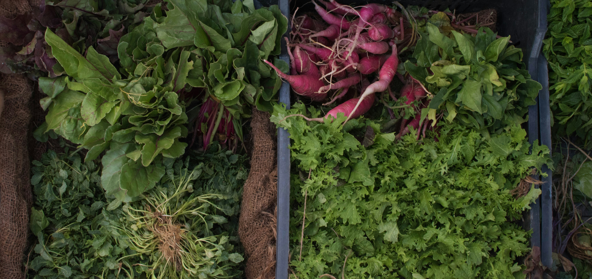
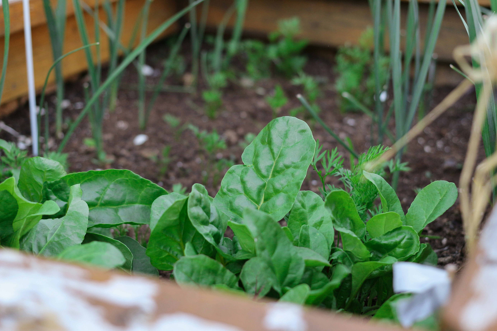

1. การใช้ทรัพยากรธรรมชาติอย่างมีประสิทธิภาพ การใช้น้ำอย่างประหยัด:
ระบบน้ำหยดหรือการเก็บน้ำฝนมารดน้ำผักช่วยลดการสิ้นเปลืองน้ำ และป้องกันการใช้น้ำเกินจำเป็น
การใช้พลังงานธรรมชาติ:
การปลูกผักในที่ที่ได้รับแสงแดดเพียงพอจะช่วยให้ผักเจริญเติบโตได้ดี ลดการใช้พลังงานจากไฟสังเคราะห์แสงหรืออุปกรณ์ไฟฟ้าอื่น ๆ2. การใช้ปุ๋ยและสารอินทรีย์
ควรใช้ ปุ๋ยอินทรีย์ เช่น ปุ๋ยคอก ปุ๋ยหมัก หรือปุ๋ยชีวภาพ แทนการใช้ปุ๋ยเคมี ซึ่งลดการปนเปื้อนในดินและน้ำ นอกจากนี้ยังช่วยปรับปรุงโครงสร้างดินและเพิ่มความอุดมสมบูรณ์ในระยะยาวการหมุนเวียนพืช:
การปลูกพืชหมุนเวียนสามารถช่วยฟื้นฟูดิน ทำให้ไม่ต้องพึ่งพาสารเคมีมากเกินไป3. การลดการใช้สารเคมี
การหลีกเลี่ยงการใช้สารเคมีที่เป็นอันตรายต่อสุขภาพและสิ่งแวดล้อม เช่น ยาฆ่าแมลง ยาปราบศัตรูพืช หรือยากำจัดวัชพืช โดยเปลี่ยนมาใช้วิธีธรรมชาติ เช่น การปลูกพืชที่ไล่แมลง การใช้สารสกัดจากพืช หรือการใช้สัตว์ช่วยควบคุมแมลงศัตรูพืช4. การดูแลดินอย่างยั่งยืน
การอนุรักษ์ดิน:
การคลุมดินด้วยหญ้าหรือวัสดุธรรมชาติเพื่อรักษาความชื้นในดิน และป้องกันการชะล้างดินจากน้ำฝนหรือการรดน้ำ การไม่ใช้ดินมากเกินไป ทำให้โครงสร้างดินยังคงแข็งแรงและมีความอุดมสมบูรณ์5. การปลูกผักท้องถิ่นและพืชหมุนเวียน
การเลือกปลูกพืชที่เหมาะสมกับภูมิอากาศและสภาพดินในท้องถิ่นจะช่วยลดการใช้น้ำและสารเคมีได้ เช่น การปลูกพืชผักท้องถิ่นที่ทนทานต่อสภาพอากาศในพื้นที่นั้น ๆ การปลูกพืชหมุนเวียนทำให้ดินฟื้นตัว และสามารถใช้ทรัพยากรอย่างมีประสิทธิภาพมากขึ้น6. การจัดการขยะและการรีไซเคิลทรัพยากร
การทำปุ๋ยหมัก จากเศษผักและผลไม้ที่เหลืออยู่ เป็นการลดขยะและนำกลับมาใช้เป็นปุ๋ยเพื่อบำรุงดิน การนำวัสดุเหลือใช้เช่น กระถางเก่าหรือถุงพลาสติกมารีไซเคิลเพื่อใช้ในการปลูกผัก ช่วยลดการใช้ทรัพยากรใหม่7. ส่งเสริมการปลูกผักในชุมชน
การส่งเสริมการปลูกผักในครัวเรือนหรือชุมชน (Urban Farming) จะช่วยลดการใช้พลังงานในการขนส่งและลดการปล่อยก๊าซเรือนกระจก นอกจากนี้ยังช่วยให้ผู้คนในชุมชนเข้าถึงอาหารที่สดใหม่และปลอดภัยมากขึ้น ความยั่งยืนของการปลูกผักเป็นส่วนหนึ่งของการเกษตรที่เป็นมิตรต่อสิ่งแวดล้อม และเป็นแนวทางที่จะช่วยให้เราสามารถผลิตอาหารได้ต่อเนื่องในอนาคต โดยไม่ทำลายทรัพยากรธรรมชาติหรือสิ่งแวดล้อม

